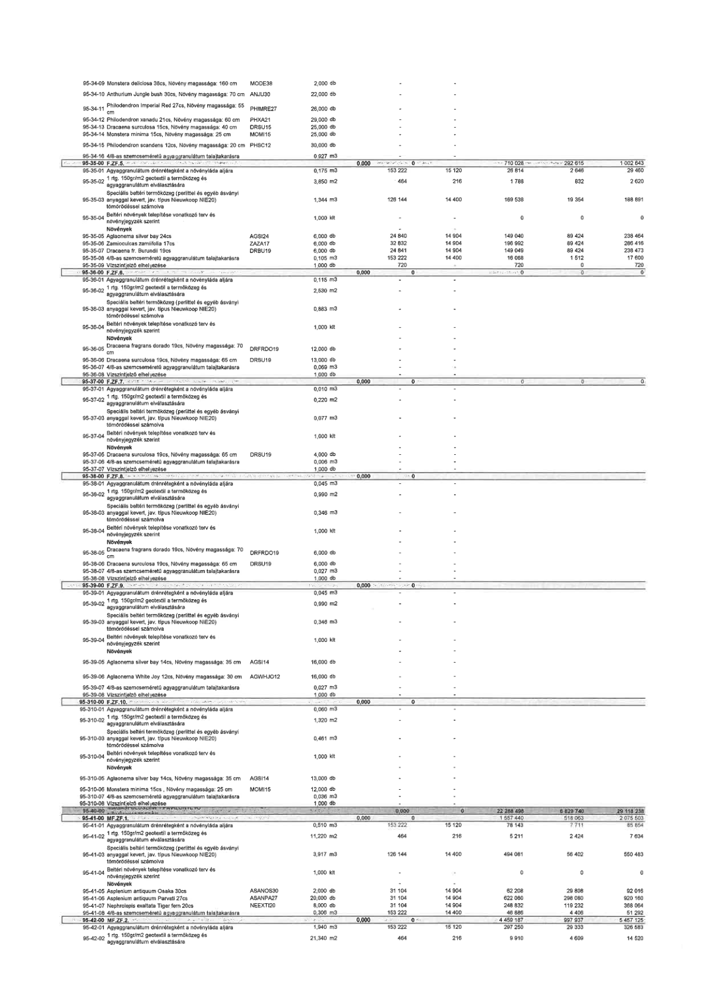

| Tétel | Menny. | Egys. | Anyag e.ár (net HUF) | Díj e.ár (net HUF) | Anyag összesen (net HUF) | Díj összesen (net HUF) | Anyag+Díj összesen (net HUF) |
|---|---|---|---|---|---|---|---|
| 95-34-09 Monstera deliciosa 38cs, Növény magassága: 160 cm | 2,000 | db | 0 | 0 | 0 | 0 | 0 |
| 95-34-10 Anthurium Jungle bush 30cs, Növény magassága: 70 cm | 22,000 | db | 0 | 0 | 0 | 0 | 0 |
| 95-34-11 Philodendron Imperial Red 27cs, Növény magassága: 55 cm | 26,000 | db | 0 | 0 | 0 | 0 | 0 |
| 95-34-12 Philodendron xanadu 21cs, Növény magassága: 60 cm | 29,000 | db | 0 | 0 | 0 | 0 | 0 |
| 95-34-13 Dracaena surculosa 15cs, Növény magassága: 40 cm | 25,000 | db | 0 | 0 | 0 | 0 | 0 |
| 95-34-14 Monstera minima 15cs, Növény magassága: 25 cm | 25,000 | db | 0 | 0 | 0 | 0 | 0 |
| 95-34-15 Philodendron scandens 12cs, Növény magassága: 20 cm | 30,000 | db | 0 | 0 | 0 | 0 | 0 |
| 95-34-16 4/8-as szemcseméretű agyaggranulátum talajtakarásra | 0,927 | m3 | 0 | 0 | 0 | 0 | 0 |
| 95-35-01 Agyaggranulátum drénrétegként a növényláda aljára | 0,175 | m3 | 153 222 | 15 120 | 26 814 | 2 646 | 29 460 |
| 95-35-02 1 rtg. 150g/m2 geotextil a termőközeg és agyaggranulátum elválasztására | 3,850 | m2 | 464 | 216 | 1 788 | 832 | 2 620 |
| 95-35-03 Speciális beltéri termőközeg (perlittel és egyéb ásványi anyaggal kevert, jav. típus Nieuwkoop NIE20) tömörödéssel számolva | 1,344 | m3 | 126 144 | 14 400 | 169 538 | 19 354 | 188 891 |
| 95-35-04 Beltéri növények telepítése vonatkozó terv és növényjegyzék szerint | 1,000 | klt | 0 | 0 | 0 | 0 | 0 |
| 95-35-05 Aglaonema silver bay 24cs | 6,000 | db | 24 840 | 14 904 | 149 040 | 89 424 | 238 464 |
| 95-35-06 Zamioculcas zamiifolia 17cs | 6,000 | db | 32 832 | 14 904 | 196 992 | 89 424 | 286 416 |
| 95-35-07 Dracaena fr. Burundii 19cs | 6,000 | db | 24 841 | 14 904 | 149 049 | 89 424 | 238 473 |
| 95-35-08 4/8-as szemcseméretű agyaggranulátum talajtakarásra | 0,105 | m3 | 153 222 | 14 400 | 16 088 | 1 512 | 17 600 |
| 95-35-09 Vízszintjelző elhelyezése | 1,000 | db | 720 | 0 | 720 | 0 | 720 |
| 95-36-01 Agyaggranulátum drénrétegként a növényláda aljára | 0,115 | m3 | 0 | 0 | 0 | 0 | 0 |
| 95-36-02 1 rtg. 150g/m2 geotextil a termőközeg és agyaggranulátum elválasztására | 2,530 | m2 | 0 | 0 | 0 | 0 | 0 |
| 95-36-03 Speciális beltéri termőközeg (perlittel és egyéb ásványi anyaggal kevert, jav. típus Nieuwkoop NIE20) tömörödéssel számolva | 0,883 | m3 | 0 | 0 | 0 | 0 | 0 |
| 95-36-04 Beltéri növények telepítése vonatkozó terv és növényjegyzék szerint | 1,000 | klt | 0 | 0 | 0 | 0 | 0 |
| 95-36-05 Dracaena fragrans dorado 19cs, Növény magassága: 70 cm | 12,000 | db | 0 | 0 | 0 | 0 | 0 |
| 95-36-06 Dracaena surculosa 19cs, Növény magassága: 65 cm | 13,000 | db | 0 | 0 | 0 | 0 | 0 |
| 95-36-07 4/8-as szemcseméretű agyaggranulátum talajtakarásra | 0,069 | m3 | 0 | 0 | 0 | 0 | 0 |
| 95-36-08 Vízszintjelző elhelyezése | 1,000 | db | 0 | 0 | 0 | 0 | 0 |
| 95-41-01 Agyaggranulátum drénrétegként a növényláda aljára | 0,510 | m3 | 153 222 | 15 120 | 78 143 | 7 711 | 85 854 |
| 95-41-02 1 rtg. 150g/m2 geotextil a termőközeg és agyaggranulátum elválasztására | 11,220 | m2 | 464 | 216 | 5 211 | 2 424 | 7 634 |
| 95-41-03 Speciális beltéri termőközeg (perlittel és egyéb ásványi anyaggal kevert, jav. típus Nieuwkoop NIE20) tömörödéssel számolva | 3,917 | m3 | 126 144 | 14 400 | 494 081 | 56 402 | 550 483 |
| 95-41-04 Beltéri növények telepítése vonatkozó terv és növényjegyzék szerint | 1,000 | klt | 0 | 0 | 0 | 0 | 0 |
| 95-41-05 Asplenium antiquum Osaka 30cs | 2,000 | db | 31 104 | 14 904 | 62 208 | 29 808 | 92 016 |
| 95-41-06 Asplenium antiquum Parvati 27cs | 20,000 | db | 31 104 | 14 904 | 622 080 | 298 080 | 920 160 |
| 95-41-07 Nephrolepis exaltata Tiger fern 20cs | 8,000 | db | 31 104 | 14 904 | 248 832 | 119 232 | 368 064 |
| 95-41-08 4/8-as szemcseméretű agyaggranulátum talajtakarásra | 0,306 | m3 | 153 222 | 14 400 | 46 886 | 4 406 | 51 292 |
| 95-42-01 Agyaggranulátum drénrétegként a növényláda aljára | 1,940 | m3 | 153 222 | 15 120 | 297 250 | 29 333 | 326 583 |
| 95-42-02 1 rtg. 150g/m2 geotextil a termőközeg és agyaggranulátum elválasztására | 21,340 | m2 | 464 | 216 | 9 910 | 4 609 | 14 520 |
